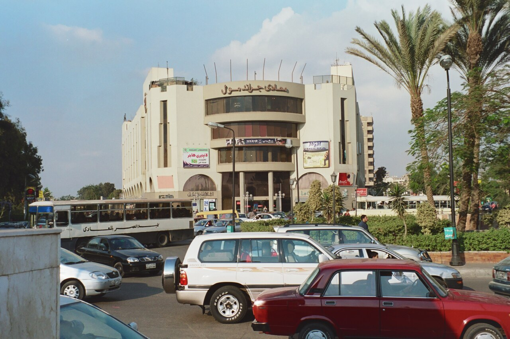
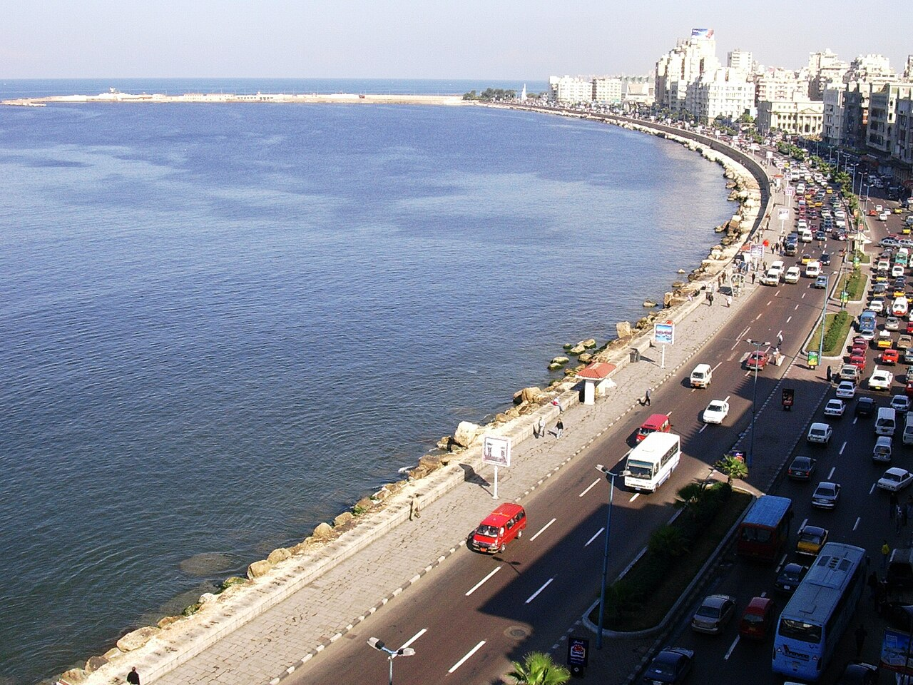
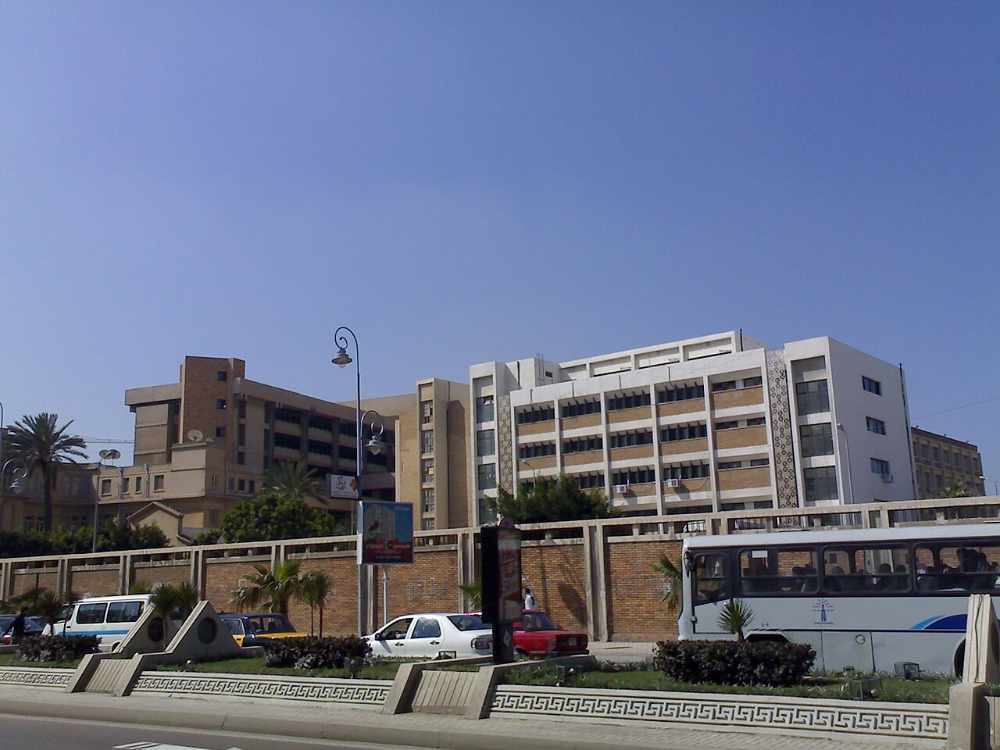
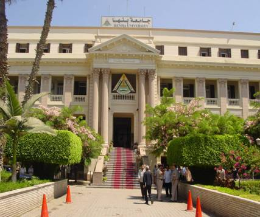

Saeloon
Saeloon was a fictional micronation-style identity and online community that originated from a private Facebook Messenger group founded in 2020. Saeloon did not represent a real country or political entity; instead, it functioned as a symbolic framework through which members expressed group belonging, shared culture, and collective identity. The community developed its own name, imagery, internal jokes, member roles, stories, and an anthem, while remaining an informal online group rather than a territorial or political organization.
Editorial note: This is the long-form article copy assembled from the details provided in the conversation. Saeloon was a fictional micronation-style identity and online community, not a real state. Much of the history below comes from participant recollections and private group material. Where claims about individuals or disputed incidents have not been independently confirmed, the text says so explicitly. Add citations to actual archived messages or screenshots before presenting those materials as formal references.
Contents
Background and origins
Saeloon began in 2020 when Mohamed Khaled created a private Facebook Messenger group with a small circle of friends, including Ziad al 7mir. At first, the group was primarily a place for casual conversation. Members shared memes, joked with one another, discussed internet culture, and talked about everyday subjects such as health, personal life, entertainment, and media. The group was informal and did not begin with a constitution, territorial ambitions, or a plan to establish a real political entity.
During its early period, the chat did not have a permanent name. Its title could change frequently, often for humorous effect or because of an inside joke. The changing names were part of the group’s casual culture. As the same participants continued to interact, repeated jokes and shared references began to create a sense of continuity. What had started as a chat among friends gradually acquired an identity that members could refer to as something distinct from an ordinary conversation thread.
Mohamed Khaled, whose online persona was known as Kahk, became the central figure in the development of that identity. His proposal to establish a stable name gave the group a more recognizable label. In early 2021, the name Saeloon became the symbolic designation for the community. It did not turn the group into a real country; rather, it gave members a shared concept around which their jokes, images, roles, and memories could collect.
Name and collective identity
The adoption of the name Saeloon helped create a more stable identity for a group whose membership and conversation topics could otherwise shift from one day to another. Members used the name as a shared point of reference and sometimes described the group through language associated with fictional countries or micronations. This language was symbolic and humorous rather than a claim to recognized sovereignty, territory, or political status.
The identity was maintained through recurring jokes, nicknames, symbolic imagery, references to group history, and the continuing participation of long-standing members. The concept of Saeloon was therefore social before it was institutional: it represented a shared online culture among participants rather than a structured organization with formal rules.
Symbolism, flag, and anthem
Flag image not found. Place Saeloon_flag.jpg in the assets folder.
Anthem audio not found. Place Saeloon_anthem.ogg in the assets folder.
One of Saeloon’s most recognizable identity elements was a black-and-white flag featuring a skull. Mohamed Khaled designed the image using image-editing software. Its visual inspiration came from traditional pirate imagery, particularly the skull-and-crossbones style commonly associated with the Jolly Roger. Within Saeloon, the flag was used as an internal emblem that made the group’s identity visually recognizable.
The flag was not intended to represent a real country or a political movement. Its purpose was to reinforce the community’s shared identity and provide a symbol that members could use when referring to Saeloon. When the original image was not readily available, participants sometimes substituted generic pirate-style imagery. The archived asset named Saeloon_flag.jpg is intended to preserve the flag associated with the community.
The group also had an informal anthem or musical item associated with its identity. An audio file named Saeloon_anthem.ogg is part of the planned archive. The existence of the file records a symbolic part of the group’s culture; it should not be confused with an official national anthem of a real state.
Organization and membership
Saeloon had no formal constitution, recognized territory, legal government, or fixed system of public offices. Leadership was informal and was shaped by participation, contribution, longevity, and social influence within the Messenger group. Mohamed Khaled was generally recognized as the founder. Saged Khaled, also known as Damalik the Geese, and Mohamed Ayman, known as JackDaPrince, were described as co-leaders or prominent figures in the group’s development.
Membership fluctuated over time. Some people joined through existing friendships, while others stopped participating or left after disagreements. There was no formal citizenship system in the legal sense. Language about membership, leadership, and national symbols belonged to the group’s fictional micronation-style framework and should be understood in that context.
A smaller circle of long-standing participants came to be associated with the creation and preservation of Saeloon’s identity. Their importance came from their continued presence and influence within the group, not from a documented legal hierarchy. As activity declined, the difference between the symbolic identity of Saeloon and the private friendships among its former members became more pronounced.
Affiliations and related groups
Saeloon existed alongside other online groups and cultural circles connected by overlapping friendships. These relationships were informal, and the accounts below are based on participant recollections rather than independent public documentation.
SIMP / WHYTBS
SIMP was a separate group chat associated in participant accounts with the acronym WHYTBS, expanded as “We Help You To Be a Simp.” The group was separate from Saeloon’s core Messenger community. According to the recollections recorded for this article, Mohamed Khaled (Kahk) and Mohamed Ayman (JackDaPrince) were associated with SIMP at an earlier stage, and Kahk was among the group’s founders. This connection is described as a former, separate association rather than evidence that SIMP and Saeloon were the same organization.
Salon Fawzi Cultural
Salon Fawzi Cultural (Arabic: صالون فوزي الثقافي) was another informal cultural circle mentioned by participants. Ahmed FwZzy was identified in these accounts as a leading figure in the group and as someone who frequently communicated with Mohamed Khaled. Participants sometimes characterized Salon Fawzi Cultural as a “twin” group to Saeloon because the two circles had overlapping contacts and cultural interaction. Despite the similar names in English transliteration, Salon Fawzi Cultural was a separate group; it was not another name for Saeloon.
According to participant testimony, an initiative was proposed to move or merge some activities between Saeloon and Salon Fawzi Cultural. Interpersonal disagreements complicated the proposal. A membership poll reportedly produced a majority against the proposed migration, and the plan was abandoned. These details are based on participant accounts and have not been independently verified.
Notable members
- Mohamed Khaled (Kahk): Founder and central organizer of Saeloon’s identity; designed its skull flag.
- Saged Khaled (Damalik the Geese): Co-leader and long-standing participant; later became less involved in public group activity.
- Mohamed Ayman (JackDaPrince): Co-leader; later associated with a smaller private chat called Sanitarium.
- Ziad al 7mir: One of the friends associated with the group’s early circle.
- Omar Wahba: Former member.
- Ahmalid: Described by participants as the youngest member; later left following a conflict.
- Mazen Mohamed: A person associated with a separate but consequential sequence of online disputes involving Kahk and the Facebook group INFO • SCP.
- Ahmed FwZzy: Identified by participants as a leading figure in Salon Fawzi Cultural, a separate group.
These descriptions reflect roles as recalled by participants. They should not be treated as formal offices or a complete membership register.
Incidents and disputes
Ahmalid
Ahmalid was described by participants as the youngest person involved in Saeloon. A dispute that took place on platforms outside the original Messenger group eventually led to his departure. Participant recollections preserve an exchange between Ahmalid and Kahk. Ahmalid reportedly asked, “Since when are you my friend?” Kahk explained that he had been at fault and apologized. Ahmalid replied, “Your apology is useless to me.” Kahk then said “Ok” and subsequently blocked Ahmalid from Saeloon-related apps.
The exchange became one of the remembered points of friction in the group’s history. It illustrated how a conflict that began outside the main chat could affect relationships inside the community. The record available here is a participant account, not an independently verified transcript; preserve the original screenshot or message if an exact quotation is to be cited on the website.
Participants also recalled that Ahmalid followed Egyptian atheist public figures such as Sherif Gaber and Kosay Betar on social media. Some members interpreted these follows as evidence of influence from outside Discord servers or online communities. That interpretation is the participants’ view, not an established explanation of Ahmalid’s beliefs or behaviour.
Mazen Mohamed and the INFO • SCP dispute
A longer-running dispute involved Mohamed Khaled (Kahk) and an individual identified in participant accounts as Mazen Mohamed of Port Said. The events below were described as occurring across approximately 2020–2022. This account is based on participant recollections and archived chat excerpts; allegations about responsibility for account bans or physical damage have not been independently corroborated.
In mid-2020, Kahk entered a period participants described as his “memer prime.” He created a Facebook profile and began producing and circulating memes. Through these online activities, he became acquainted with Mazen, who was described by people in the group as someone who liked pranks and had some technical knowledge. The relationship initially included joking and online interaction, but the recollections later came to frame some of that behaviour as a source of distrust.
Kahk and Mazen reportedly co-founded a Facebook group called INFO • SCP, intended for content connected with the SCP Foundation universe and creepypasta. The group reportedly grew quickly, with participants recalling that it reached approximately 300 members within about a month. Its growth made the project more significant to Kahk than an ordinary small chat, and later problems with the group’s administration became an important source of conflict.
According to participant testimony, Mazen repeatedly engaged in pranks and attempts at social engineering. In one reported incident, he asked Kahk for his account password while offering to share his own password in return. Kahk reportedly agreed and gave him access. This episode was later recalled as a serious breach of trust, particularly as relations between the two deteriorated.
Approximately a year later, the group’s administration pages were reportedly banned from Facebook following a series of reports. Participants attributed the reports to Mazen and believed that the resulting removals affected the Facebook group and associated administrative pages. The responsibility for the reports is an allegation in the participant accounts, not an independently confirmed finding. The incident nevertheless caused a major rupture between Kahk and Mazen, after which Kahk blocked him across platforms.
Participant accounts further allege that Mazen later damaged Kahk’s phone by burning its motherboard. According to the account, Kahk did not understand the extent or cause of the device’s failure until months later, when he accessed email records from another device. No independent evidence confirming the alleged physical damage or its cause was provided. This portion of the story should remain explicitly attributed to participant testimony.
After these events, Kahk created a new Facebook account under the name “Zuck Bug.” He reportedly adopted additional security measures, including email-only registration, avoiding the use of phone numbers, and other precautions intended to reduce the chance of further account trouble. Participants said Mazen eventually ceased contact and the conflict subsided, allowing Kahk to continue managing Saeloon-related activity. The account illustrates how a relationship that had included humour and pranks came to be remembered as a conflict involving access, trust, and online security.
Mazen’s family context
The account provided for this archive also describes a family tension surrounding Mazen’s online interactions. Mazen was described as a farmer from Port Said. His mother objected to the youthful slang and occasional swearing he used, and she believed that Kahk was a bad influence who was corrupting her son. According to the same account, she spoke negatively and insultingly about Kahk because she blamed him for Mazen’s behaviour.
That view was reportedly not shared by some of Mazen’s friends, who did not believe Kahk was corrupting him. This disagreement created a contrast between the mother’s interpretation of the online friendship and the view attributed to some peers. It is included as context reported by the people involved, rather than as an independently verified assessment of either person’s character. The tension helps explain the social background to the dispute but does not, by itself, establish the cause of Mazen’s conduct.
Influences and internal change
Saeloon’s culture was shaped by internet memes, alternative online media, and shared references. Participants specifically mentioned the work of musician and visual artist Jack Stauber as an influence on the group’s aesthetic interests. These influences were part of a broader online culture of remixing images, circulating videos, adopting references, and developing inside jokes.
The group also changed as its members’ personal lives changed. Participant accounts describe Saged Khaled as undergoing a religious reorientation and deciding to withdraw from certain behaviours associated with the group’s earlier culture. Saged reportedly told Kahk that he had “changed his mentality” and intended to leave some old behaviours behind. Kahk agreed, according to the same recollections. Such changes affected the group’s dynamics because Saeloon depended on the continued willingness of a small number of people to participate.
As public activity diminished, some conversations shifted to smaller private chats, including a group called Sanitarium. Mohamed Ayman and Saged Khaled were reportedly among the people associated with Sanitarium. This shift did not mean that every former member shared the same reasons for leaving or reducing participation; it reflected the broader movement away from the original public-facing group toward more limited private communication.
Dissolution
Saeloon’s activity gradually declined as members’ interests, relationships, and daily lives changed. The public identity remained in memories, saved media, flags, and discussions, but the original Messenger community became less active. The group’s public closure is recorded as 5 November 2024. The date marks the end of Saeloon as an active public group rather than the end of every friendship or conversation among its former members.
After the closure, some participants continued to communicate privately or one-to-one. Sanitarium reportedly provided one smaller space for some former members, including Mohamed Ayman and Saged Khaled. Others ceased regular contact. As a result, Saeloon continued mainly as an archived identity: a name, flag, anthem, collection of conversations, and memory of the social world developed by its participants.
Gallery and archive assets
The following filenames were mentioned for the planned website. Confirm the actual filenames and their locations before publishing; GitHub Pages paths are case-sensitive.

Image not available:Maadi,_Egypt.jpg
Image not available:Alexandria_Corniche-_East_-_panoramio.jpg Image not available:
Image not available: All_Gizah_Pyramids.jpg1280px-Cairo_Tower_and_Qasr_El_Nil_Bridge.jpg
Image not available:Faculty_of_arts_in_Alexandria_University.jpg
Image not available:Banha.jpgReferences and notes
No independently published sources were supplied for the history in this article. The intended source base is internal and should be represented accurately rather than replaced with invented citations:
- Private Messenger conversations: original messages from the Saeloon group, where preserved and appropriate to publish.
- Archived screenshots and media: saved images, group records, the flag, and the anthem file.
- Participant recollections: statements from people who were involved in Saeloon or associated groups.
- Unverified incident accounts: claims about the responsibility for Facebook reports and alleged phone damage should remain labelled as unverified unless reliable supporting evidence is supplied.
Because the group originated in a private chat, consider removing phone numbers, account identifiers, addresses, and other private information from screenshots before publishing them. Do not label a placeholder such as “participant recollections” as an external citation; link it to a real archived source only if you have one and have permission to publish it.